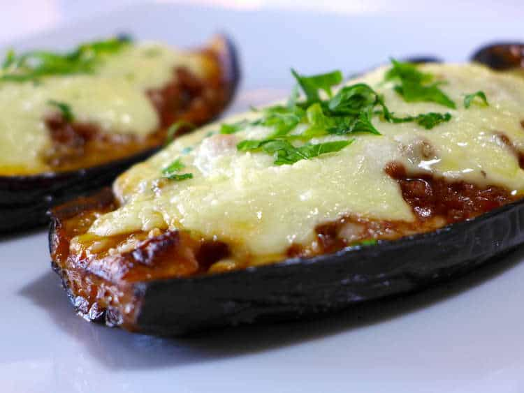

Greek stuffed eggplants 'papoutsakia'

Description
This recipe for Greek stuffed eggplant dish (papoutsakia) is a great way to take a summer vegetable and turn it into a delicious, hearty meal. The eggplants are stuffed with a cinnamon-spiced meat sauce, topped with a creamy béchamel sauce and baked until golden. Serve this Greek stuffed eggplant dish as a starter or main dish with a nice Greek salad and some crusty bread. Enjoy!
Ingredients:
- 5 eggplants
- 500g minced beef (18 oz.)
- 1 large red onion, finely chopped
- 2 cloves of garlic, finely chopped
- 1 glass of red wine
- 1 tin chopped tomatoes or tomato juice (passata)
- 1 cinnamon stick
- 1 tsp oregano
- 100g grated kefalotyri or any hard yellow cheese (3.5 oz.)
- Olive oil
- Salt and freshly ground pepper
- 2–3 tbsps chopped parsley
- 100g flour (3.5 ounces)
- 100g butter (3.5 ounces)
- 900ml milk (3 and 3/4 cups)
- 2 egg yolks
- A pinch of nutmeg
- Salt to taste
- 4 large potatoes, boiled
- 50g milk (1.7 oz.)
- 1 tbsp butter
- 2 egg yolks
Steps:
- To prepare these extra juicy shoe-shaped ‘melitzanes papoutsakia’ recipe, cut the eggplants in two pieces and carve them crosswise (the flesh). Season the eggplants and place them in a colander for about half an hour. Wash them with plenty of water and drain them on some kitchen paper.
- Preheat the oven at 200C. Season the eggplants with salt and pepper and drizzle with olive oil. Place the eggplants (with the skin facing up) in a baking tray, lined with parchment paper. Bake the eggplants for 40 minutes, until softened.
- In the meantime, prepare the meat sauce for the ‘papoutsakia’. Peel and chop the onions and garlic. Place a large pan on medium heat, add some olive oil and the onions and sauté, until softened. Stir in the garlic and sauté. Turn the heat up, add the minced beef breaking it up with your spoon and sauté. Deglaze with the red wine and wait 1-2 minutes to evaporate. Stir in the canned tomatoes, the cinnamon stick, a pinch of sugar, the oregano and season. Bring to the boil, turn the heat down and simmer with the lid on for about 30 minutes, until most of the juices have evaporated. At the end, add 1-2 handfuls grated cheese and chopped parsley and stir.
- Prepare the béchamel sauce for the Greek stuffed eggplant. Use a large pan to melt some butter over low-medium heat. Add the flour whisking continuously to make a paste. Add warmed milk in a steady stream; keep whisking in order to prevent your sauce from getting lumpy. If the sauce still needs to thicken, boil over low heat while continuing to stir. Remove the pan from the stove, stir in the egg yolks and season with salt, pepper and a pinch of nutmeg. Whisk quickly, in order to prevent the eggs from turning an omelette! Season with salt to taste.
- If you choose to top these Greek stuffed eggplant dish with mashed potatoes, boil the potatoes in hot water for 10 -15 minutes, until soft. Add them in a food processor, along with the milk, butter, the egg yolks, freshly ground pepper and mix until smooth.
- Layer the eggplants at the bottom of a baking pan, with the skin down. Remove some of the flesh, to make room for the filling. Sprinkle the eggplants with some grated cheese and spoon the meat sauce on top of each piece. Top with the béchamel sauce or mashed potatoes and sprinkle with grated cheese. Bake the ‘melitzanes papoutsakia’ at 180C for 20 minutes, until nicely colored.
- Serve this delicious Greek stuffed eggplant dish as a starter or main dish with a nice Greek salad and some crusty bread. Enjoy!